#Load the Excel file:
library(readxl) #Load the library for inporting the file to R
#Select the file
Statistics_Kumla_20200408<-read_excel("F:/LINKOPING/Credits/Courses/LiU/Data Visualization/R/Statistics_Kumla_20200408.xlsx")7 Exercise 1: Data plotting and transformations
This sixth chapter is some examples of how to plot and play around with the data. Most of the descriptions of the code are presented as comments in the chunks.
7.1 Basic and ggaplot2 plots:
Scatter plot: using plot()
# http://www.sthda.com/english/wiki/scatter-plots-r-base-graphs
plot(x = Statistics_Kumla_20200408$PFBA, y = Statistics_Kumla_20200408$PFOS, main = "PFBA vs PFOS concentrations",
xlab = "PFBA concentrations (ng/L)",
ylab = "PFOS concentrations (ng/L",
pch = 19) # choosing symbol for points in a graph (see ?pch for number/symbol) 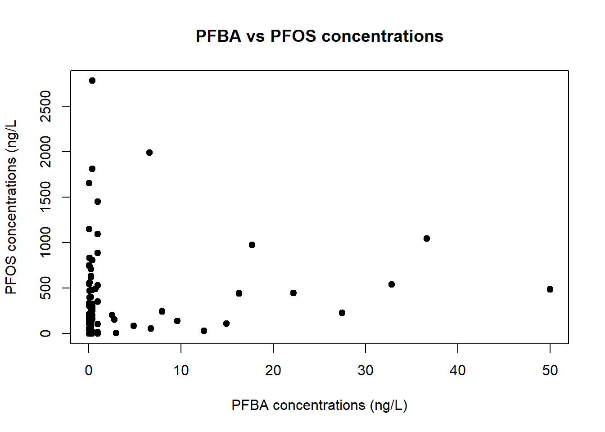
Scatter plot: ggplot2
library(tidyverse)── Attaching core tidyverse packages ──────────────────────── tidyverse 2.0.0 ──
✔ dplyr 1.1.2 ✔ readr 2.1.4
✔ forcats 1.0.0 ✔ stringr 1.5.0
✔ ggplot2 3.4.3 ✔ tibble 3.2.1
✔ lubridate 1.9.2 ✔ tidyr 1.3.0
✔ purrr 1.0.2
── Conflicts ────────────────────────────────────────── tidyverse_conflicts() ──
✖ dplyr::filter() masks stats::filter()
✖ dplyr::lag() masks stats::lag()
ℹ Use the conflicted package (<http://conflicted.r-lib.org/>) to force all conflicts to become errorsggplot(
data = Statistics_Kumla_20200408,
mapping = aes(x = PFBA, y = PFOS)
) +
geom_point()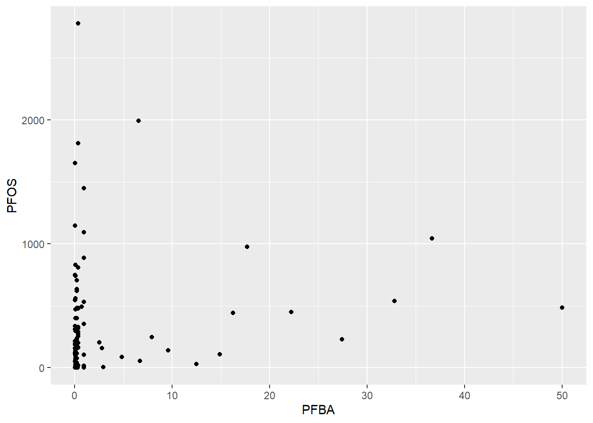
Scatter plot + regression line: using plot()
plot(x = Statistics_Kumla_20200408$PFOA, y = Statistics_Kumla_20200408$PFBA, main = "PFBA vs PFOS concentrations",
xlab = "PFOA concentrations (ng/L)",
ylab = "PFBA concentrations (ng/L",
pch = 19) + # choosing symbol for points in a graph (see ?pch for number/symbol)
# We can add a regression line into the same graph
abline(lm(Statistics_Kumla_20200408$PFOA ~ Statistics_Kumla_20200408$PFBA, data = Statistics_Kumla_20200408), col = "orange", lwd = 3) # lwd is the line width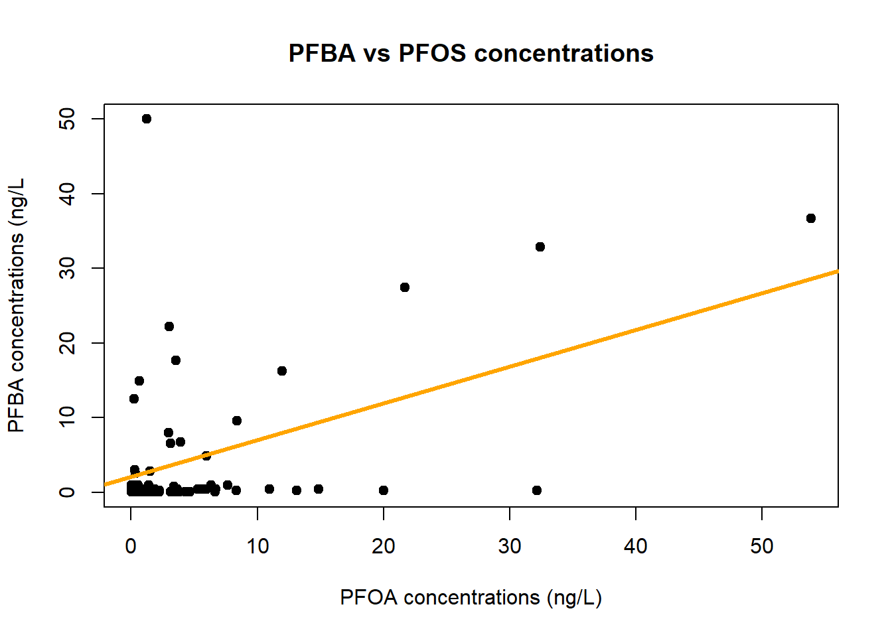
integer(0)Scatter plot + regression line: using ggplot
ggplot(
data = Statistics_Kumla_20200408,
mapping = aes(x = PFOA, y = PFBA)
) +
geom_point() +
geom_smooth(method = "lm", # uses the linear regression model
se = FALSE, # this will remove the confidence intervals
colour = "orange",
size = 2) +
theme_test()Warning: Using `size` aesthetic for lines was deprecated in ggplot2 3.4.0.
ℹ Please use `linewidth` instead.`geom_smooth()` using formula = 'y ~ x'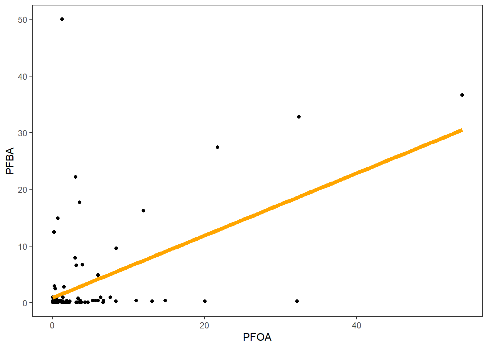
Scatter plot + loess fit line: using plot()
plot(x = Statistics_Kumla_20200408$PFOA, y = Statistics_Kumla_20200408$PFBA, main = "PFBA vs PFOS concentrations",
xlab = "PFOA concentrations (ng/L)",
ylab = "PFBA concentrations (ng/L",
pch = 19) + # choosing symbol for points in a graph (see ?pch for number/symbol)
# as well as a loess fit
lines(lowess(Statistics_Kumla_20200408$PFBA, Statistics_Kumla_20200408$PFOA), col = "green", lwd = 3)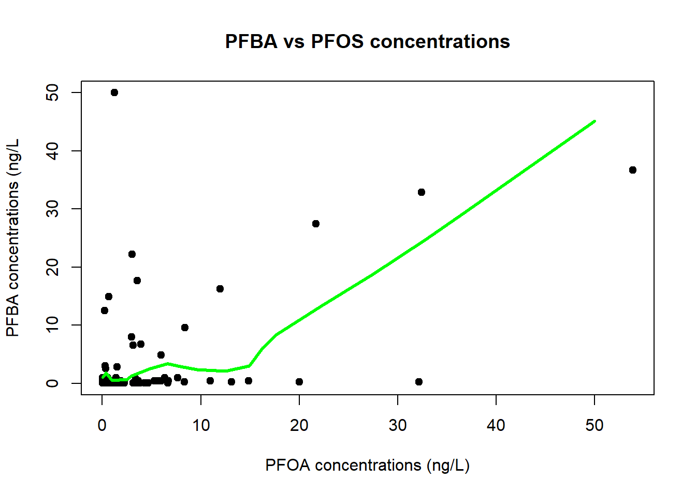
integer(0)# to clear the graphics from the Plots pane, use graphics.off() in the script or dev.off() in the consoleScatter plot + loess fit line: using ggplot
ggplot(
data = Statistics_Kumla_20200408,
mapping = aes(x = PFOA, y = PFBA)
) +
geom_point() +
geom_smooth(method = "loess",
se = FALSE,
colour = "green",
size = 2) +
theme_test()`geom_smooth()` using formula = 'y ~ x'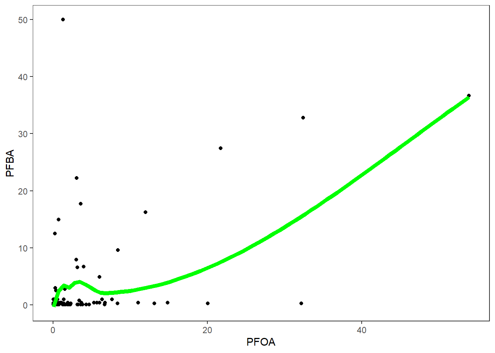
Bar plots: using barplot()
groupsPFOS <- Statistics_Kumla_20200408[, c("Group", "PFOS")] # subset two variables from the dataframe
groupsPFOS$Group <- as.factor(groupsPFOS$Group)
barplot(height = Statistics_Kumla_20200408$PFOS)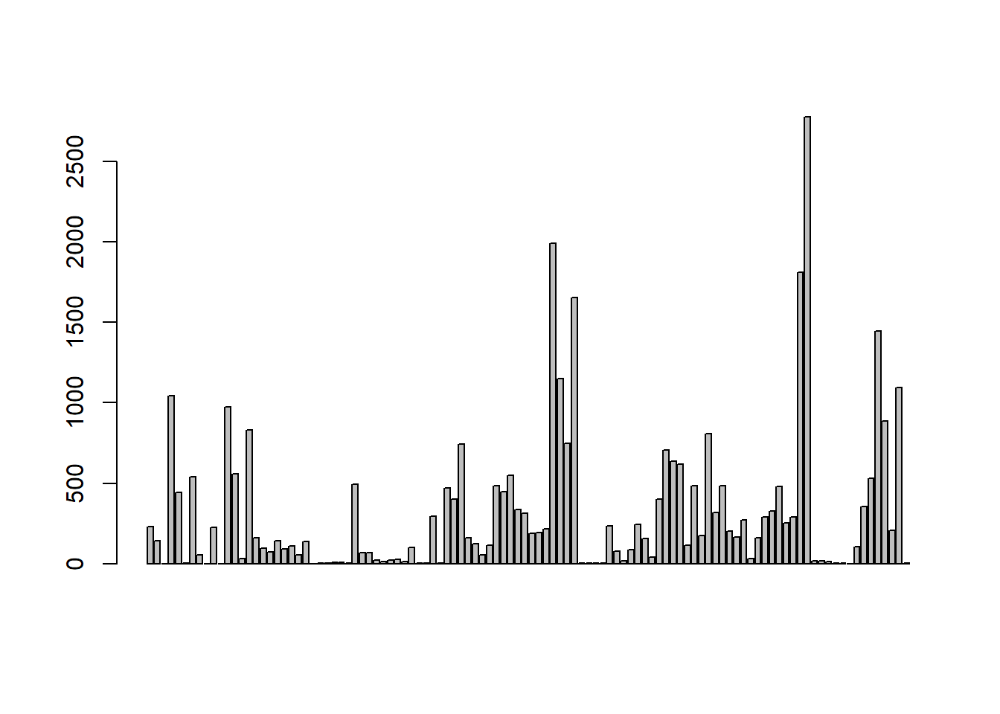
Bar plots: using ggplot
missingfunction (x) .Primitive("missing")Box plots: using boxplot()
# Box plot of one variable
boxplot(Statistics_Kumla_20200408$PFBS)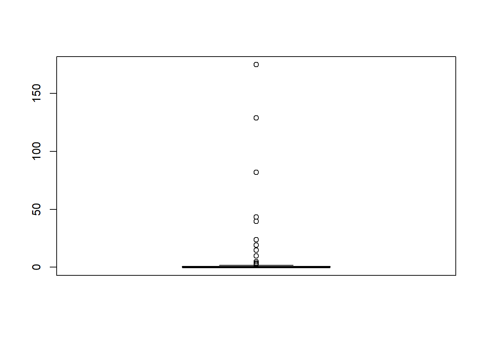
Box plots: using ggplot
missingfunction (x) .Primitive("missing")7.2 More advanced plot using ggaplot2:
ggplot(
data = Statistics_Kumla_20200408,
mapping = aes(x = ID, y = PFBA, color = Group)
) +
geom_point()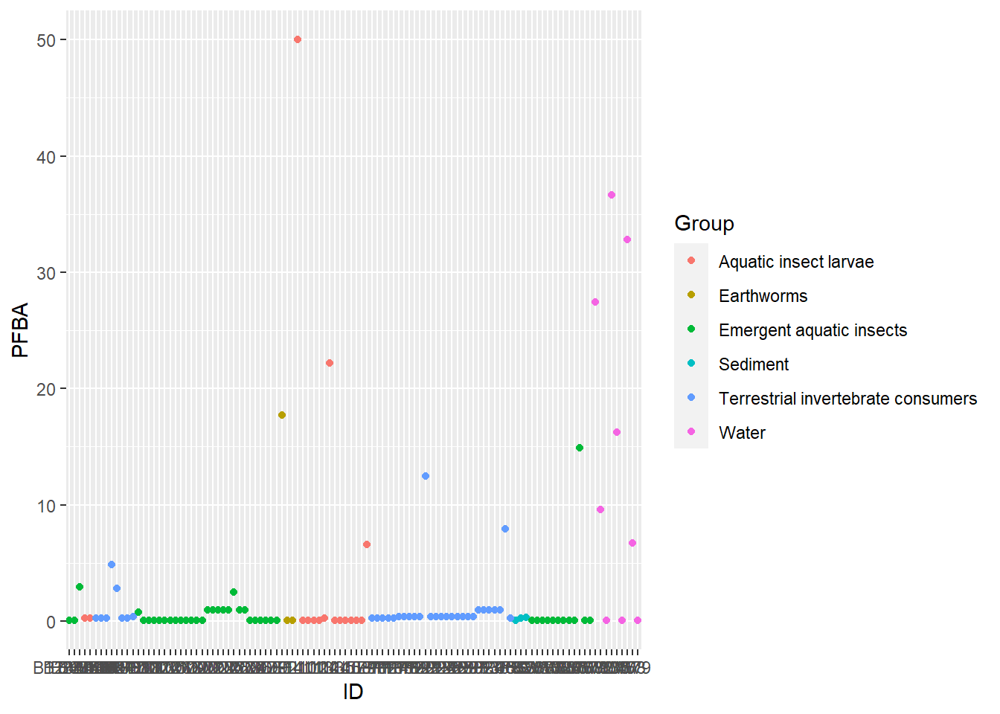
ggplot(
data = Statistics_Kumla_20200408,
mapping = aes(x = ID, y = PFBA, color = Group)
) +
geom_point() +
geom_smooth(method = "lm")`geom_smooth()` using formula = 'y ~ x'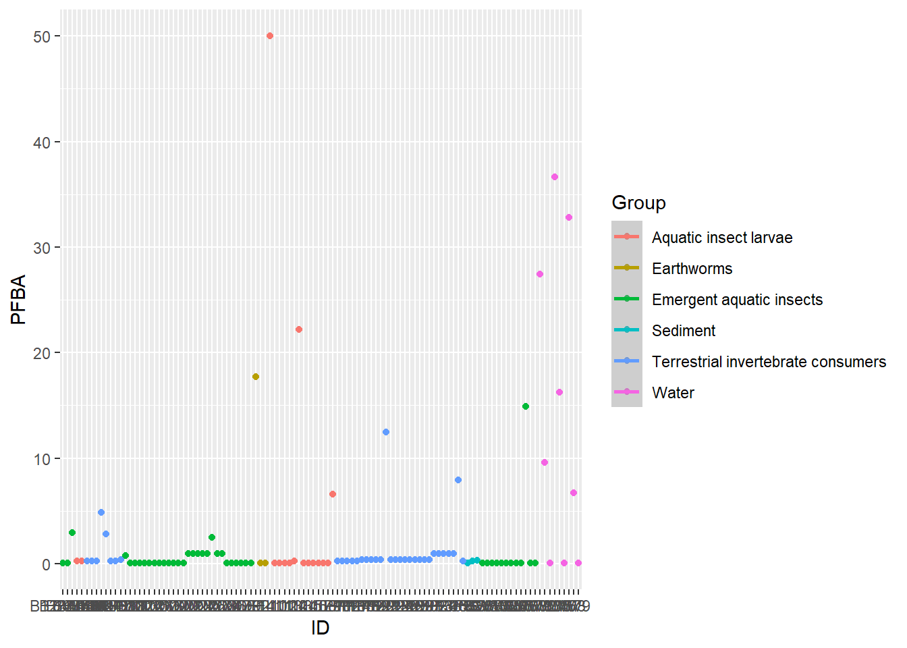
ggplot(
data = Statistics_Kumla_20200408,
mapping = aes(x = ID, y = PFBA)
) +
geom_point(mapping = aes(color = Group, shape = Group_Family)) +
geom_smooth(method = "lm")`geom_smooth()` using formula = 'y ~ x'Warning: The shape palette can deal with a maximum of 6 discrete values because
more than 6 becomes difficult to discriminate; you have 24. Consider
specifying shapes manually if you must have them.Warning: Removed 52 rows containing missing values (`geom_point()`).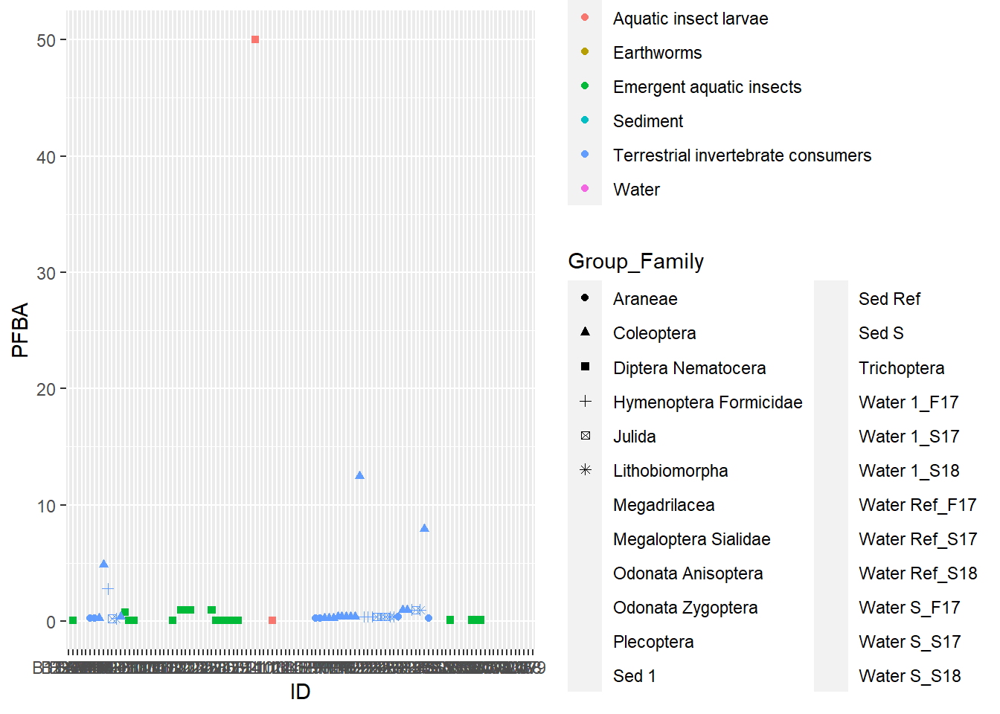
ggplot(data = Statistics_Kumla_20200408, mapping = aes(x = PFOA, y = PFBA)) +
geom_point(size = 2, colour = "black") + # add a scatter plot
geom_smooth(method = "lm", # uses the linear regression model
se = TRUE, # this will remove the confidence intervals
colour = "orange",
size = 2) +
geom_smooth(method = "loess",
se = TRUE,
colour = "green",
size = 2)`geom_smooth()` using formula = 'y ~ x'
`geom_smooth()` using formula = 'y ~ x'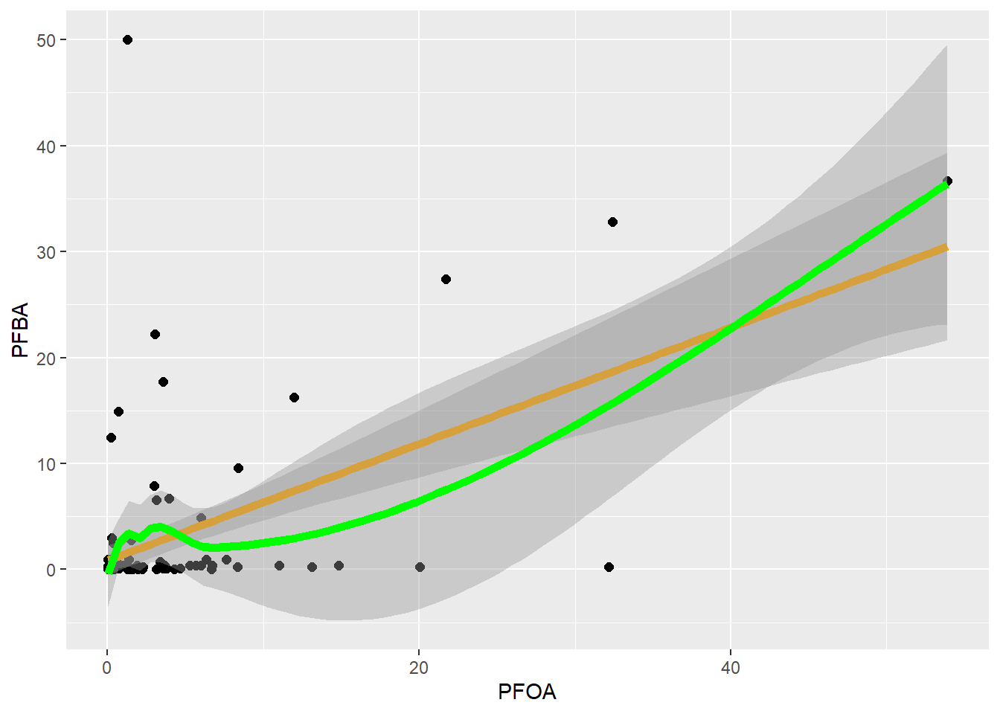
ggplot(data = Statistics_Kumla_20200408, mapping = aes(x = PFOA, y = PFOS)) +
geom_point(size = 2, colour = "black") + # add a scatter plot
geom_smooth(method = "lm", # uses the linear regression model
se = FALSE, # this will remove the confidence intervals
colour = "orange",
size = 2) +
geom_smooth(method = "loess",
se = FALSE,
colour = "green",
size = 2)`geom_smooth()` using formula = 'y ~ x'
`geom_smooth()` using formula = 'y ~ x'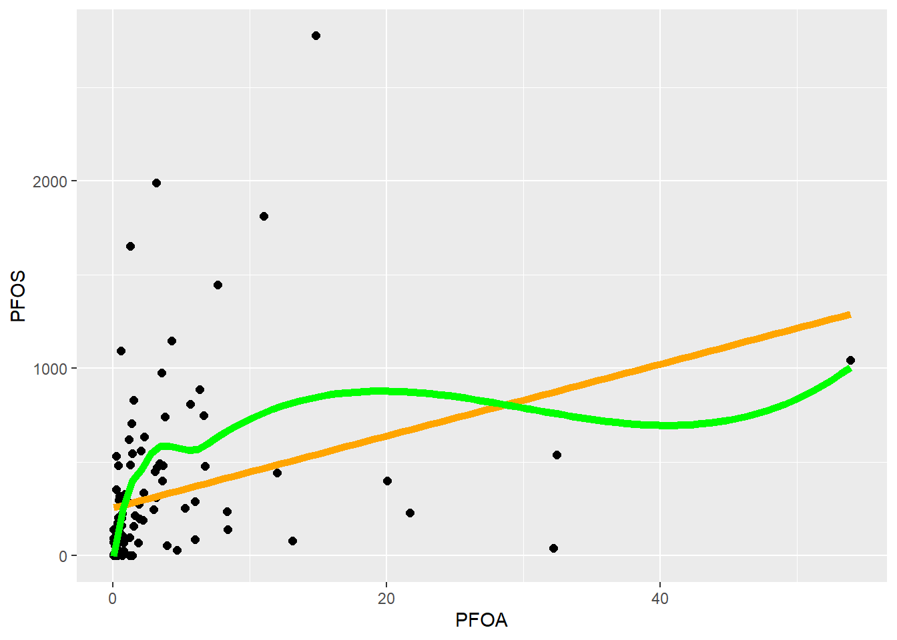
Statistics_Kumla_20200408 |> select(Year, PFOA) |> filter(Year== 2017)# A tibble: 70 × 2
Year PFOA
<dbl> <dbl>
1 2017 21.7
2 2017 8.38
3 2017 0.219
4 2017 53.9
5 2017 12.0
6 2017 0.218
7 2017 0.683
8 2017 0.0332
9 2017 3.54
10 2017 2.03
# ℹ 60 more rowsggplot(data = Statistics_Kumla_20200408) +
geom_point(mapping = aes(x = PFOA, y = PFBA, size = PFOS), colour = "black") 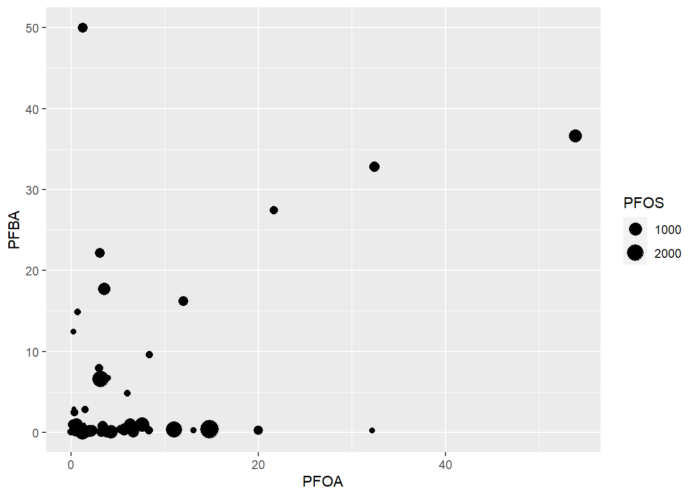
ggplot(data = Statistics_Kumla_20200408) +
geom_point(mapping = aes(x = PFOA, y = PFBA, size = PFOS), colour = "black") +
scale_size_continuous(
name = "PFOS Description",
breaks = c(10, 50, 100, 500, 1000), # Adjust the breaks to include more values
labels = c("10", "50", "100", "500", "1000") # Adjust labels accordingly
)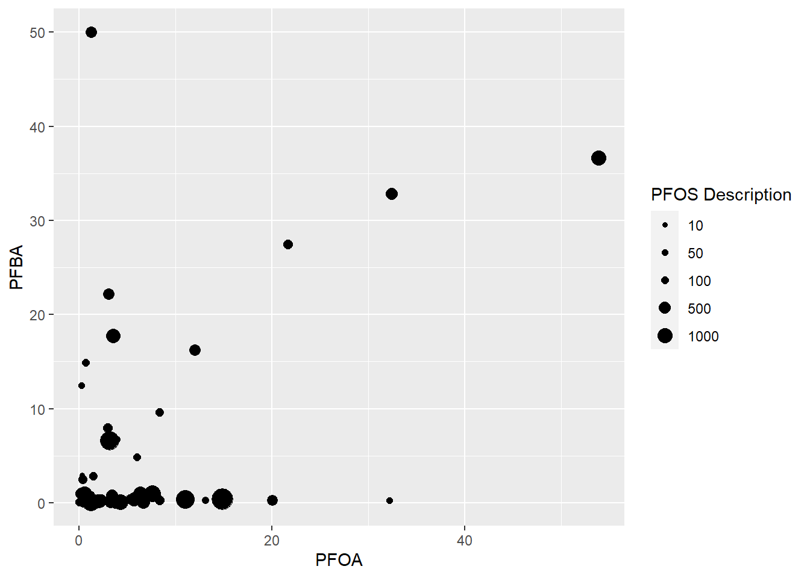
ggplot(data = Statistics_Kumla_20200408) +
geom_point(mapping = aes(x = PFOA, y = PFBA, size = PFOS), colour = "black") +
scale_size_continuous(
name = "PFOS Description",
breaks = c(10, 50, 100, 500, 1000), # Adjust the breaks to include more values
labels = c("10", "50", "100", "500", "1000") # Adjust labels accordingly
) +
geom_smooth(mapping = aes(x = PFOA, y = PFOS),
method = "lm",
se = FALSE,
colour = "orange",
size = 2) +
geom_smooth(mapping = aes(x = PFOA, y = PFOS),
method = "loess",
se = FALSE,
colour = "green",
size = 2) +
geom_point(mapping = aes(x = PFOA, y = PFBS, # new mapping
size = PFBS), # size of points according to PFBS values
colour = "purple") + # colour outside of mappings
theme_classic() # This theme will remove the background colours and lines`geom_smooth()` using formula = 'y ~ x'
`geom_smooth()` using formula = 'y ~ x'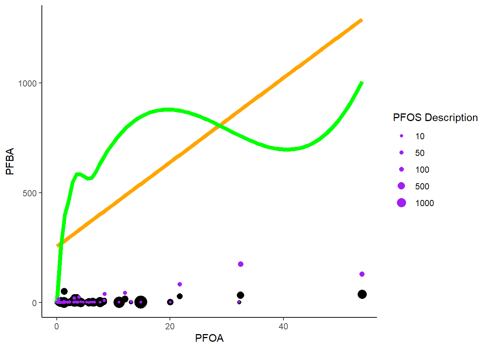
7.3 Data transformation for ggplot plotting:
PFAS_insects_long <- Statistics_Kumla_20200408 %>% # shortcut for pipe Ctrl + shift + M
pivot_longer(cols = PFBA:PFOA, # select all columns from PFBA to sum_21PFAS
names_to = "somePFAS", # name of the new column
values_to = "Conc") %>% #name of the values from PFBA:sum_21PFAS
mutate(somePFAS = as.factor(somePFAS)) #make PFAS column a factor variable#check the PFAS group names
PFAS_insects_long |> group_by(somePFAS) |> tally() |> view()
# select PFOS isomers
PFOS_branched <- c("1-PFOS 419/169", "3/4/5-PFOS80/98.9")
PFAS_insects_long |>
filter(Group != "Water") |> #remove all water samples to only include solid samples
filter(str_detect(somePFAS, "sum_", negate = TRUE)) |> #remove all sum of PFAS using the argument: negate=TRUE
ggplot(aes(x = somePFAS, y = Conc)) +
geom_point() +
geom_boxplot() +
theme_classic() +
ylab("Concentration of PFAS (ng/g) in solid samples")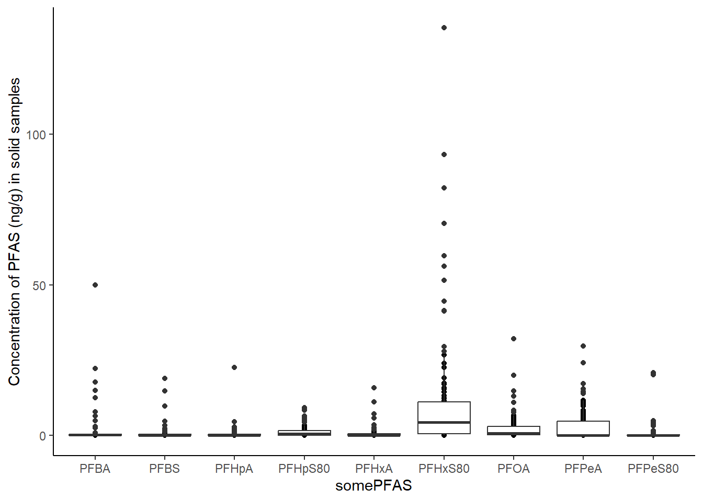
PFAS_insects_long |> mutate(Color = ifelse(Conc > 50, "orange", "black")) |>
ggplot(aes(x = somePFAS, y = Conc)) +
#geom_point(color = ~Color) +
geom_boxplot() + #ifelse(test, yes, no)
scale_color_identity() + # Use scale_color_identity to override the default color mapping
theme_classic() +
ylab("Concentration of PFAS (ng/g) in solid samples")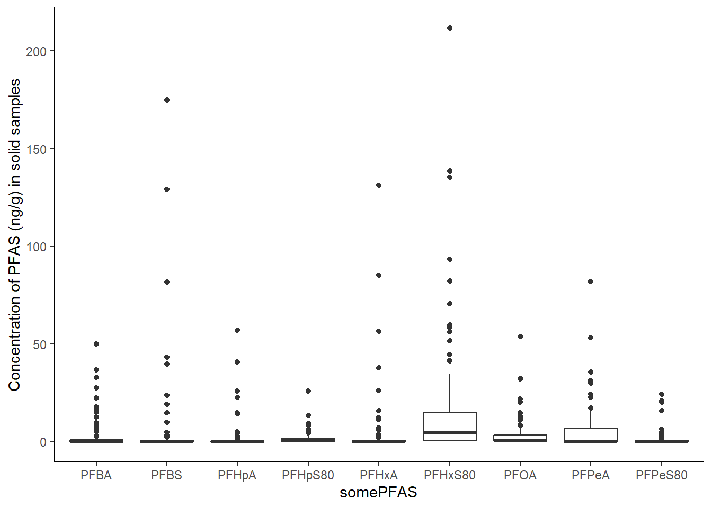
ggplot(data = PFAS_insects_long, aes(x = somePFAS, y = Conc)) +
#geom_point(color = ifelse(as.numeric(somePFAS) < 0.007, "orange", "black")) +
#geom_boxplot() +
#scale_color_identity() + # Use scale_color_identity to override the default color mapping
theme_classic() +
ylab("Concentration of PFAS (ng/g) in solid samples")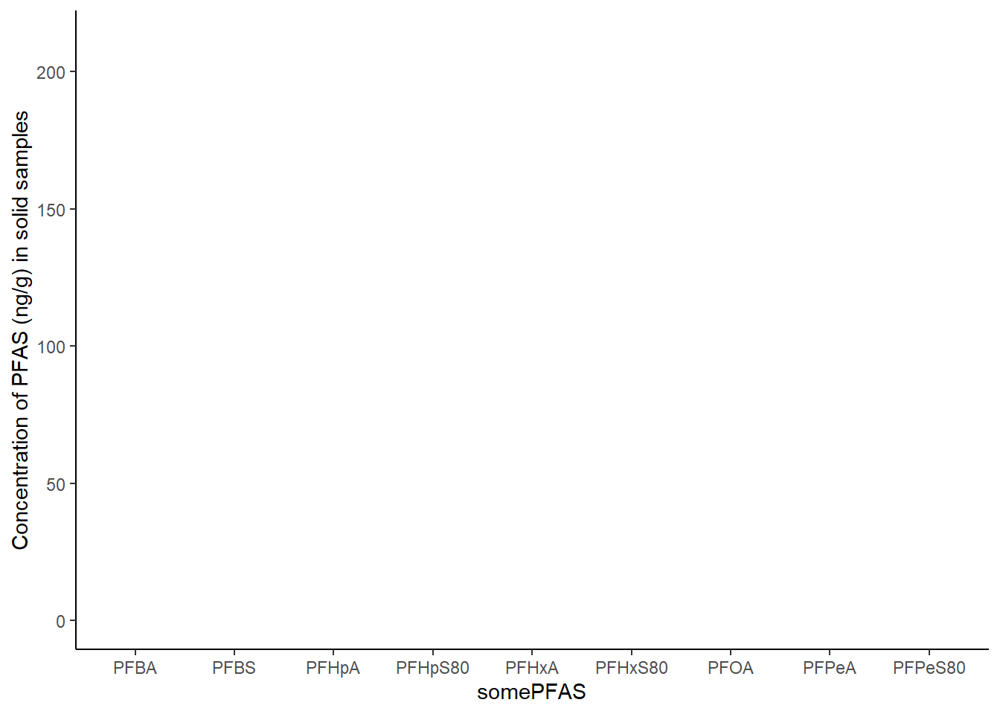